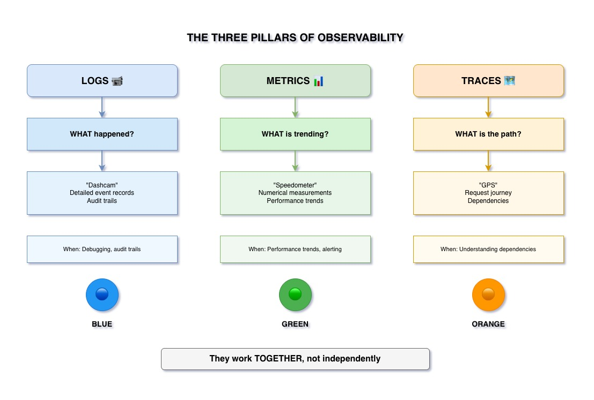

The Three Pillars of Observability
Logs, Metrics, and Traces work together to provide complete system visibility.

Understanding the Three Pillars
📝 Logs
The Dashcam
Detailed event records of what happened in your system.
- Timestamped events
- Contextual information
- Error messages
- Request/response data
📊 Metrics
The Speedometer
Numerical measurements over time.
- Performance trends
- Resource utilization
- Operation counts
- Time measurements
🗺️ Traces
The GPS
Request journey across services.
- Service call paths
- Request correlation
- Distributed context
- End-to-end flow
Pillar 1: Logs
What Logs Answer: "What happened?"
- Events: User logged in, order placed, payment processed
- Errors: Exception stack traces, validation failures
- Context: User ID, request ID, timestamp
- Details: Method parameters, response payloads
Example: "User 123 failed to create order at 14:32:15 - Inventory service returned 503"
Pillar 2: Metrics
What Metrics Answer: "What's trending?"
- Performance: Average response time, P95 latency
- Throughput: Requests per second, operations per minute
- Resources: CPU usage, memory consumption, database connections
- Business: Orders created, users registered, revenue
Example: "Order creation response time increased from 100ms to 500ms over last hour"
Pillar 3: Traces
What Traces Answer: "What's the path?"
- Journey: Request path from frontend to backend services
- Correlation: Single ID tracking across all services
- Timing: Time spent in each service
- Context: User info, headers propagated across services
Example: "Request abc-123 went: Frontend → Order Service → Inventory Service → Payment Service"
The Key Insight: They Work TOGETHER
Not Independent Silos
All three pillars must work together to provide complete observability:
- Metrics show you there's a problem (response time spike)
- Traces show you where the problem is (which service)
- Logs show you why the problem happened (connection pool exhausted)
Without all three, you're debugging blindfolded.
Key Takeaways
- Logs answer: "What happened?" - detailed event records
- Metrics answer: "What's trending?" - numerical measurements over time
- Traces answer: "What's the path?" - request journey across services
- All three are essential for complete observability - they work together, not independently